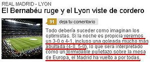

Diario AS
 De: La Frikipedia, la enciclopedia extremadamente seria.
De: La Frikipedia, la enciclopedia extremadamente seria.
| De la serie empresas malignas:
|
| AS(co)
|
|
|
| Perteneciente al grupo:
|
Real Madrid
|
| Se dedica a:
|
Manipular información a favor del Real Madrid
|
| País de origen:
|
Madrid y demás ciudades de España
|
| Año de fundación:
|
6 de marzo de 1902 (junto con el Real Madrid)
|
| Super Presidente:
|
Tomás Roncerdo
|
| Nivel de maldad:
|
Ilimitada
|
| Empresas absorbidas:
|
Todos los diarios deportivos del país, junto con sus amigos del MAR(I)CA
|
| Número de empleados:
|
Todos son fachas aficionados del Real Madrid
|
| Atentados contra la humanidad
|
Sacar un nuevo impreso cada día
|
| ¿Se aconseja trabajar aquí?
|
Sólo si eres un chalao tonto l'haba fanático madridista
|
| ¿Se recomienda el boicot?
|
Es casi obligado hacerlo
|
| Cantidad de denuncias:
|
 (cada minuto) (cada minuto)
|
| Sitio web:
|
Página oficial de AS(co)
|
«Nosotros no tenemos a Silva y no estamos dando el coñazo todos los días»
~ David Albelda sobre lo pesaos que son los periódicos del Madrid con su Dios CR9
«Si hay un equipo que no se puede quejar de los árbitros es el Real Madrid»
~ Carlos Gurpegui responiendo a los "Villaratos" del AS(co)
«El que diga que el Barcelona está arriba por los árbitros es que tiene o muy mala idea o no tiene ni puta idea»
~ José María del Nido responiendo a los "Villaratos" del AS(co)
El Diario AS (también conocido como JAS, AS(s), AS(co) o AS(queroso)) es el panfleto más radicalmente madridista y facha [1] de España. Es conocido por su veneración ilimitada hacia Cristiano Ronaldo (y en general a todo el "glorioso" Real Madrid), sus críticas inacabables al Barça, los artículos de Tomás Roncerdo y el uso de la palabra "Villarato". Se les conoce por redactar sus artículos en un bar mientras toman unas birras y la lían parda con cánticos cual aficionado fanático que se cree que su equipo es el mejor y más mejor del universo [2]. Además, siempre publican ipso facto en su web las jugadas polémicas y/o errores arbitrales que perjudican al Real Mandril y/o favorecen a los "malditos catalufos" (pero no al revés). Si hace falta, se borran jugadores rivales en las fotos para dejar a los "catalinos" en fuera de juego (lo llaman infografía [3]). Es por eso que, como dice el saber popular, "del diario AS no te fiarás". Como todo el mundo sabe, es uno de los medios de la famosa "caverna mediática", "prensa mesetaria", "central lechera" o como se quiera llamarla [4].
Noticias
El director del panfleto ultra.

Para que luego se quejen...
En el AS tienen varios moldes de artículo que usan para hacer las "noticias", modificándolos según el caso, para rellenar las páginas cuando hay escasez de ideas (a menudo). Son estos:
(Nótese su inmensa barcelonitis, tienen que poner a parir al Barça como sea. Y si no hay argumentos deportivos, se recurre a lo que haga falta)
Periodistas
Estos son algunos de los ¿periodistas? que "trabajan" en el AS, dedicándose principalmente a hacer líneas falsas, inclinarlas, borrar jugadores, etc. para intentar demostrar que los árbitros favorecen al F.C. Barceló y/o perjudican al Real Mandril:
- Tomás Roncerdo: Demente mental crónico, podrido de mandrilismo e infinitamente antibarcelonista, conocido por su obsesión enfermiza por encumbrar al Madriz, denunciar el Villarato (inventado por él), poner a parir al Barcelona y no acertar ningún pronóstico futbolístico en su vida (salvo por casualidad, vamos). Que es gafe, vamos. Es recomendable visitar su artículo si se quiere conocerlo en profunidad.
- Tomás Guasch: Él dice que es
sufridor seguidor del Cacanyol (equipo filial del Real Mandril), pero evidentemente es un mandrilista inflitrado de este periódico en Barcelona para criticar e intentar desestabilizar al Barça. Ya dijo en 2010 que estaba "casi convencido" de que "el Madrid puede hacer el triplete". "El 20-A es la fecha en la que se desmonta todo este tinglao. El Madrid sale con la Copa de Mestalla, ¿y cómo paras eso?". Menos mal que hay gente que le devuelve a la realidad [17]. Tras 14 años (1996-2011), se fue al Marca, pero su estilo no cambió mucho: "¡Cien millones de cagahercios marca el cagómetro culé y subiendo! Es el Madrid... vamos, que lo veo campeón de Liga aun perdiendo esta tarde con el Sporting..."(huelga decir que no acertó nada de todo esto aparte de lo de la Copa).
- Alfredo Rebaño:
Gordo Señor con algún kilo de más, barbudo y ceporro, similar a Tomás Roncerdo por sus mentiras y lloros sobre los árbitros en su artículo diario. Ya verás como mañana, en su artículo, aparecerá la palabra "villarato". Y eso que en 2002 dijo que "El camino bueno es ignorar las injusticias del azar (una de cuyas formas es el arbitraje) y poner uno de su cuenta los mejores medios. El camino malo es repetirse como una letanía que al rival se le conceden favores y que juega con ventaja, porque eso equivale, justamente, a darse por vencido" (Fuente).
- Juanma Trueba: Este siempre hace los previos y los resúmenes de los partidos del Real Mandril. El día que el Lyon les eliminó de la Champions tuvo la gran idea de decir que pasarían seguro, e incluso con goleada (esto no es coña: [18]). Gran profeta del madridismo [19] [20] [21].
- Pedro Pablo
Rintintín San Martín: Conocido por decir "el Barça va a llegar al partido del Bernabéu roto" antes de que el Barça ganara 0-2 en el Bernabéu; y también por decir que "veo a Puyol bajo de forma" antes de que Puyol marcara un gol al Madrid. Teóricamente analiza la actuación arbitral, pero hay quien dice que no tiene ni idea.
- Manuel Franco: Redactor de F1 desde 2010, más conocido como "el Halcón" [27] o "el conspiraciones" [28] [29]. También es un aspirante a profeta [30] [31] [32] [33] e intenta imitar a su predecesor en materia de fichajes [34] [35]. En ocasiones ve adelantamientos [36]. El mérito es siempre de Frenando Alonso [37].
Apodos
En el AS suelen usar algunos sobrenombres para varios personajes para ensalzar la grandeza del Real Madrid. Aquí va una muestra de los apodos que usan, y también de los que no usan, para que se vea lo que les interesa y lo que no:
- Cristiano Ronaldo: Superman, Dios, El abdominales/cachas/cuerpo 10 - El gominas/niñato/chupón/escupecámaras.
- Pepe: El mejor central del mundo - El masacragetafenses, El pisamanos, Hannibal Lecter.
- Raúl: El 7, El duende, El eterno - Baúl, Gandúl, El estorbo, El que nunca hace nada.
- Iker Casillas: El mejor portero del mundo, El Santo - El que se queda quieto cuando le chutan [38], El reptador [39], El topo.
- Joan Laporta: Gordo separatista catalán asqueroso - El presidente del Barça con más títulos, el que fichó a Guardiola.
Portadas
Portada estándar sobre cualquier fichaje.
A continuación vienen algunas portadas de este periódico recordadas por que se han llevado un gran own3d (o, simplemente, las risas de la gente porque se autoretratan):
¿Sabías que...
- Tienen menos credibilidad hablando del F.C. Barceló que Petazetas hablando sobre la crisis [40]?
- Son los inventores del "Villarato" y de sus variantes, como el "Platinato"?
- Según sus portadas y artículos, no se entiende que el Madrid no haga tripletes cada temporada [41] [42]?
- Si el F.C. Barceló gana 2-1, es que "acabó pidiendo la hora"; pero si lo hace el Real Mandril, es que "ganó con suficiencia"?
- Si Lionel Messi está 3 partidos sin marcar, es que "está en crisis"; pero si lo hace Cristiano Ronaldo, es que está en modo generoso y da asistencias?
- Sólo hay Villarato cuando les interesa [43] [44]?
- Si el árbitro favorece al Madrid, es que fue "valiente", "admirable" y "perfecto" [45] [46]?
- Dijeron que "Turienzo Álvarez, afín al 'Villarato', será el árbitro del derbi" y que "Cose a amarillas a los pericos", y luego ese árbitro se comió un penalti claro a favor del Barça en el último minuto [47]?
- Sólo son del Atlético cuando les interesa (básicamente, cuando juega contra el Barça) [48]?
- Dijeron que Lass tiene "embarazo psicológico": [49]?
- Según su director, Pepe "finge patear sin patearle" a Casquero [50]?
- Dan rigurosas exclusivas [51] [52] [53][54] [55] [56] [57] [58] [59] [60] [61] [62]?
Opiniones de los internautas
- Diferencias sutiles semánticas: "Si fuera penalty en el área del Mallorca dirían: penalty claro de Ramis a Benzema. Como es al Mallorca, el titular es: el Mallorca pidió penalty. De pedir nada, penalty como una catedral. Y punto".
- Juanmi: "Ya lo decía Relaño... se está volviendo a la "normalidad", o sea, a 100 años de favoritismo arbitral con el Real Madrid, ni más ni menos".
- Bético: "Tres años y tres entrenadores después, Schuster sigue teniendo razón".
- vilgates: "Pues yo creo que el Madrid ganará fácil, 0-2 o 0-3, incluso no descarto una goleada 0-5. ¿Por qué? Primero, porque todo el mundo sabe que cuando los culés se enfrentan al Madrid les entra el canguelo y tienen el cagómetro echando humo; segundo, porque por juego estamos cada vez más cerca o incluso un poco por encima de ellos; y tercero, porque tenemos la mejor plantilla de toda la historia: tenemos al mejor jugador del mundo (CR), a la mejor pareja de centrales del mundo (Pepe - Ramos), al mejor lateral izquierdo del mundo (Marcelo), al mejor mediocentro del mundo (Alonso), al mejor extremo del mundo (Di María), al próximo balón de oro (Özil), y al mejor nueve del mundo (Karim). ¿O vais a saber vosotros más que los de fut-troleros y puntolotas?".
- ClaridadTotal: "El Madrid y los árbitros suman 48 [puntos], el Madrid solo no llegaría a 40".
- Reival: "Supongo que en el segundo de Osasuna teníais puesta la porno en la tele y no visteis el fuera de juego, no?".
- Carlos: "Si hacéis una lista con las barbaridades que ha hecho el Special Five necesitáis sacarlo por volúmenes".
- Shiro: "Cuando es un penalty igual a favor del Granada contra el Barça es claro, pero cuando es a favor del Barça contra el Bilbao entonces no lo es, eso es criterio y lo demás son tonterías. En fin, es de esperar y encima el Madrid con todos los regalos que le han hecho este año se queje es de ser hipócritas, pero bueno, viendo el entrenador que tienen...".
- Increíble: "Dios mío cuanta hipocresía. Esto lo hace el Barcelona cada semana y decís que es aburrido, juego de Balonmano y muchas más sandeces, pero ahora con la selección es una exhibición ¿de verdad qué no os da vergüenza?".
- Luis: "Me he equivocado de página. Esto debe ser "La Codorniz" o "El Jueves". Disculpad, voy a ver si encuentro el diario deportivo que buscaba".
- Miguelon: "Últimamente tengo la sensación de que todos los días es 28 de diciembre".
- Nonato: "No sabía que el AS ahora tenía una sección de humor. Muy gracioso".
- Imaginesion: "Prepotencia es ganar la Décima todos los años desde 2002".
- Loquehayqueoir: "El Madrid favorito ¿porqué, por las que ha ganado en los 14 años que llevamos de este siglo? Bueno, si os consoláis así pues nada, nada... angelitos".
- adso: "Los del "fallo de infografía" con otra exclusiva sin imágenes ni nombre y apellidos... en su línea".
- Lucas: "Como siempre ya nos olvidamos que antes del penalti a Cristiano, se comió la expulsión de Ramos y un penalti a Cesc".
- Manu: "Juanma: eso te pasa por confundir los deseos con la realidad. Tu madridismo te nubla el juicio. Este Barça es una castaña comparado con el de Guardiola, pero el Madrid y sus presuntas estrellas son la mayor mentira del fútbol actual. No tienen nivel para iniciar ciclo alguno".
- Tortell: "¿Pero se acaba el ciclo del Barça o qué? Ya me canso de esperar".
- Paco: "Señores del AS, ¿pueden publicar las estadísticas de penaltis de las últimas cuatro temporadas? Gracias".
- Saboria Blanco: "Como siempre, en Plaza Mayor el Madrid no es objeto de chanzas y de ironías. El Madrid está en los altares".
- Mopu: "Juanma, ¿todo esto te lo dicta el ser superior por teléfono o sale de ti para contentarlo? Una liga de las últimas seis para el Madrid de los mil millones y no hay crítica. ¡¡Viva el periodismo imparcial!!".
- Aldan: "Lo curioso es que el peor Barça que se recuerda en años, sin portero ni defensa, con Messi 2 meses fuera de la competición con los casos de Neymar y Messi, la muerte de Tito... puede ganar la Liga de la BBC, del Madrid genial al contragolpe y del Atlético imperial. La conclusión es que el Madrid lleva años a remolque del Barça. Que sólo cuando el Barça afloja el Madrid tiene opciones. Qué penita Roncero".
- Carlsen: "¿Veis lo que pasa por celebrar los triunfos antes de jugar los partidos? Si es que no aprendéis la lección, y mira que el Barça se empeña en enseñárosla una y otra vez".
- Gamperucci: "Es el fin de ciclo más lento que recuerdo. No llega nunca!!!!!".
- MARIO P.: "LASTIMA... 2 más de la Real Sociedad y les llega su SEXTETE...".
- Samu: "Bueno, pero a lo que importa ¿Cuántas camisetas se han vendido hoy?".
- Flips: "Me alegro un montón. Pomadita para el escozor creado por su infinita prepotencia...".
- Willian blake: "Hasta hace unas semanas su equipillo, el trampas, era lo mejor, y ahora le meten caña a más no poder, sois unos hipócritas, la peor afición del mundo. Aúpa Atleti".
- Jorge: "Y a esto niños y niñas se le llama mal perder".
- Llorones: "Por cierto, del gol mal anulado al Barça no se habla, ¿no?".
Ver también
 El AS destaca por su respeto a los rivales del Real Mandril.
Enlaces externos
 Empresas Empresas 
|
Comunicaciones y entretenimiento
|
Autor(es):
- Fordus
- Conan
- Bladguer
- Deimos987
- Generibot
- Liloló
- JosanDepor
Frikipedia 2005-2016, Licencia
GFDL 1.2 - Extraído por FrikiLeaks
![[8]](http://lacavernadeportiva.files.wordpress.com/2011/01/portadas-as-villarato.jpg){kind=link}
{kind=link}
{kind=link}
{kind=link}
{kind=link}
{kind=link}
{kind=link}
{kind=link}
{kind=link}
{kind=link}
{kind=link}
{kind=link}
![[47]](http://img834.imageshack.us/img834/8958/turienzato.jpg){kind=link}
![[48]](http://www.as.com/recorte/20090302dasdasftb_1/LCO/Ies/Portada_AS.jpg){kind=link}
{kind=link}
{kind=link}
{kind=link}
{kind=link}
{kind=link}
{kind=link}